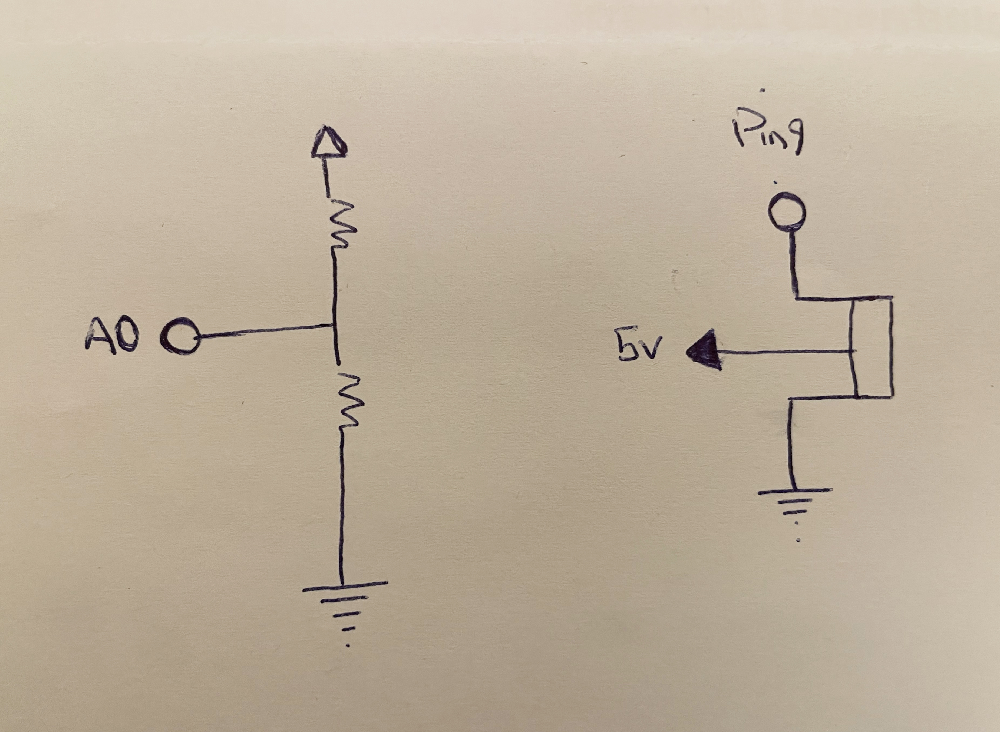

Input
Picture of the circuit!

gif of the circuit!

Schematic of the circuit!

#include //import the servo library
Servo servo1; // create a servo object to control the servo1
int Val; // Photoresistor
int sensorMin = 1023; //maximum sensor value
int sensorMax = 0; //minimum sensor value
// put your setup code here, to run once:
void setup() {
Serial.begin(9600); //pass the value 9600 to the speed parameter
servo1.attach(9); // attach Servo object to pin 9
if (Val > sensorMax) { // record the maximum sensor value
sensorMax = Val; // set the sensor to maximum sensor value (1023)
}
if (Val < sensorMin) { // record the minimum sensor value
sensorMin = Val; // set the sensor to minimum sensor value (0)
}
}
// put your main code here, to run repeatedly:
void loop() {
int Val = analogRead(A0); // attach the photoresistor sensor to analog pin A0
Val = map (Val, 0, 120, 0, 180); // map the sensor value
analogWrite (9, Val); // control the servo with sensor value
Serial.println(Val); // print out the state of the sensor
delay(300); // delay for 300 millis
}